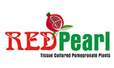

General Information

Pomegranate (Punica sp.) is native to the Middle East and South Asia. The pomegranate is one of the first five cultivated foods in the world. The pomegranate is very high in potassium, vitamin C and anti-oxidants. Pomegranate is a high value crop. Apart from its demand for fresh fruits and juice, the processed products like wine and candy are also gaining importance in world trade. It is an ideal crop for the sustainability of small holdings, as pomegranate is well suited to the topography and agro-climate of arid and semi-arid regions
